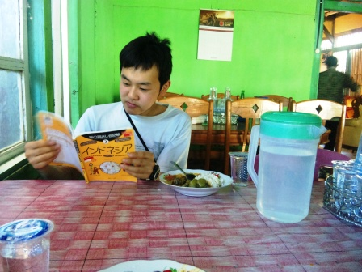
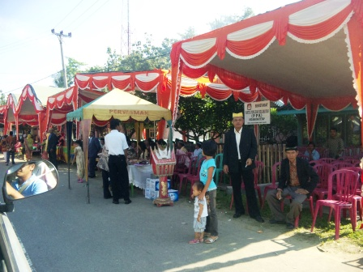
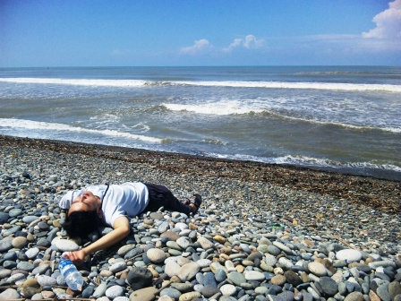
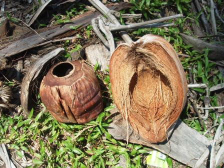
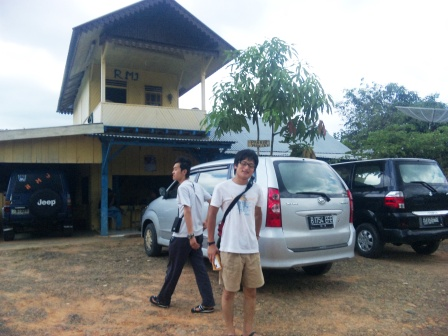

10日目～運転手の暴走～

疲れる毎日が続いているが、寝るとちゃんと体力は回復してくれる。しかし、運転手と過ごす日々は精神的にはきつい。特に大井はずっと助手席に座っていたため、その心労は僕の比ではなかった。今日はどんなサプライズが僕たちを待ち受けているのだろう。朝は宿のすぐ近くにあったバイキング形式の食堂でカレーを食べた。

今日は何か特別な日なのかもしれない。各地でこのような催し物をやっていた。最初は結婚式かと思ったが、どうやら違うらしい。巨大なスピーカーで大音量の音楽を流していた。

ブンクルまではずっと海岸沿いの道を行く。昨日と比べると直線の比較的コンディションの良い道路が続いていたが、ところどころは未舗装の大きくえぐられたような個所があった。

きれいなビーチが見えた場所で小休止。やはり海水は黄色く濁っている。気持ちのいい晴れだった。

インドネシアですっかり見慣れたヤシの実。海岸に落っこちていたもの。

ブンクルには昼頃着いたが、ここでも問題が発生。運転手がもう疲れたとか言ってゴネたのである。一時はブンクルから移動したくないと子供のようなわがままを言っていたが、それでは困る。ブンクルから移動しなかったら丸1日予定よりも遅れてしまうことになる。再び疲れる交渉の末、ブンクルから北東に100km弱の距離にあるクルップという町まで行ってもらうことで交渉はまとまった。しかし、運転手はこの後暴走し、目的地とはあさっての方向に車を走らせた。僕たちが地図を見せ、現在地はここだから道を間違えているんだ、戻ってくれと言っても運転手は全くいうことを聞かない。彼は道に不安を感じると車をいったん停車させ、周囲の人に聞く。インドネシア人はみな親切心から「知らない」とは言えない人が多い。もちろん、偏見が混じっているかもしれないがスマトラの人々はほとんど地図の見方を知らないようだった。彼は地図よりもそのような人たちの話を重要視するので思った方向にいけないのだ。車は最終目的地の赤道直下の町、ブキティンギからは遠ざかり、むしろジャワ島に近づいていくのだった。日も暮れ、車は辺鄙な田舎道を走り続ける。似たような集落をいくつも過ぎ、重要な分岐で左に行くように言うと、彼はいやだという。このままジャカルタに帰るつもりなのか。うんざりしていた僕らは、かなり強く彼に左に行くよう求めたが、彼は山賊が出るぞなどと首を掻っ切るようなジェスチャーをして僕たちを脅した。彼は最後まで僕たちの指示に従わず、右に行ってしまった。僕たちは完全にあきれた。この日もパガララムの宿に着いたのは相当遅くなってしまった。安宿を見つける余裕はなくホテル泊になってしまったが、今日の間違いの全責任は彼にあるので追加金は支給しなかった。

宿では重苦しい空気が漂った。ここまで思った通りの旅ができないとは思わなかった。これではなんのためにレンタカーを借りたのかが分からない。まるで行き先のわからない暴走車に乗っている気分だった。インドネシアでは交通費は安く、飛行機と言えども日本の列車での移動よりも安いほどだ。あえて僕たちがレンタカーを借りたのは、飛行機の旅では味わえない個所を見て回りたかったのだ。
僕たちは、運転手との決別を決めた。すでに車の中にいた頃から案は出ていたが、それはせめて赤道直下のブキティンギまで連れて行ってもらい、そしたらフケってしまおうというものだった。しかし、このペースでは確実に僕たちに許された時間の中でブキティンギにたどり着くことは不可能に思われた。加えて、僕たちとは決して理解しようとしない運転手と同じ空間にいるのはもう限界だった。僕たちは、明日の朝少し早く起床し、運転手と車を残してこの町を去ることにした。明日から車という足は失ってしまうけれども、僕たちだけの自由な旅ができると思うとうきうきする。
翌日へ